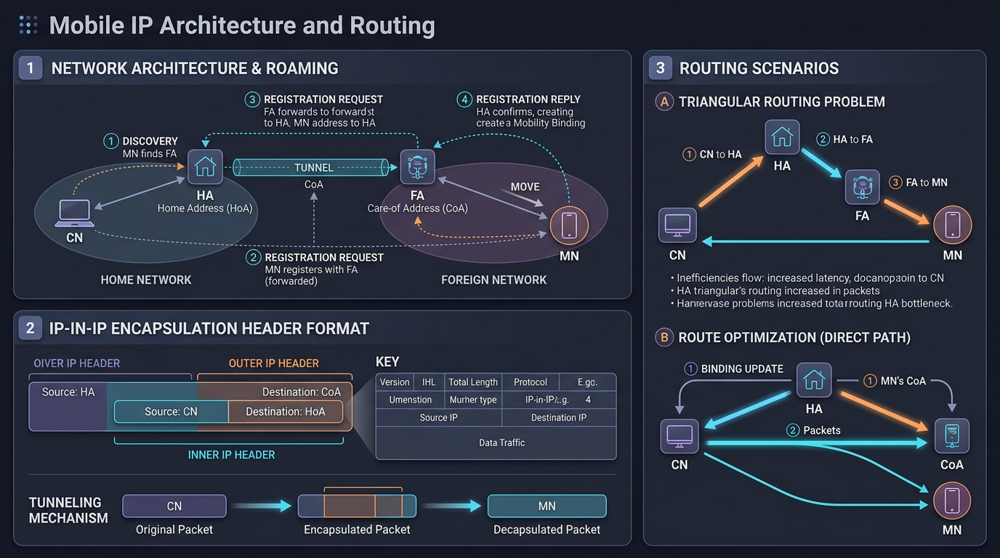

Master Mobile IP (RFC 5944) mechanics, Home Agent & Foreign Agent roles, Care-of Address (CoA) assignment, IP-in-IP encapsulation, and Triangular Routing solutions.
Standard IP routing relies on an IP address performing two roles: **Node Identifier** and **Location Pointer**. When a mobile host moves to a new subnet, changing its IP address breaks active TCP connections, while keeping its old IP prevents internet routers from routing packets to its new physical location.
Mobile IP (RFC 5944) solves this problem by separating the node's **permanent identity** from its **temporary location address**.
| Entity / Address | Abbreviation | Role & Function |
|---|---|---|
| Mobile Node | MN | The mobile end-device (e.g. laptop, smartphone) that changes its network attachment point. |
| Home Agent | HA | A router on the Mobile Node's home network that maintains location tracking and tunnels packets to the MN's current location. |
| Foreign Agent | FA | A router on the visited foreign network that assists the MN in receiving tunneled packets. |
| Correspondent Node | CN | The remote peer host communicating with the Mobile Node. |
| Home Address | HoA | Permanent 32-bit IP address assigned to the MN on its home network (remains constant). |
| Care-of Address | CoA | Temporary IP address assigned to the MN while roaming on a foreign network. (Foreign Agent CoA vs Co-located CoA). |
Agent Advertisement messages. When an MN receives an advertisement from an FA, it realizes it has moved to a foreign network.Registration Request to its Home Agent (HA) updating its current location binding. The HA returns a Registration Reply.The Home Agent uses IP-in-IP Encapsulation (RFC 2003) to forward packets to the Mobile Node:
In standard Mobile IP, inbound packets follow a **Triangular Route** (CN → HA → FA → MN), while outbound packets travel directly (MN → CN). This creates inefficient latency!
Route Optimization allows the Correspondent Node (CN) to learn the Mobile Node's current Care-of Address directly. Once learned, the CN tunnels packets directly to the CoA (CN → CoA → MN), eliminating the Home Agent bottleneck!

| Technology | Standard | Max Speed | Primary Scope / Use Case |
|---|---|---|---|
| Wi-Fi 7 | IEEE 802.11be | 46 Gbps | Ultra-high-speed Wireless LAN (WLAN) |
| Bluetooth BLE | IEEE 802.15.1 | 2 Mbps | Short-range Personal Area Network (WPAN) & IoT |
| 5G Mobile | 3GPP 5G NR | 20 Gbps | Global Cellular Broadband, URLLC, & mMTC IoT |
| Mobile IP | RFC 5944 | N/A (Protocol) | Seamless IP session roaming across subnets |